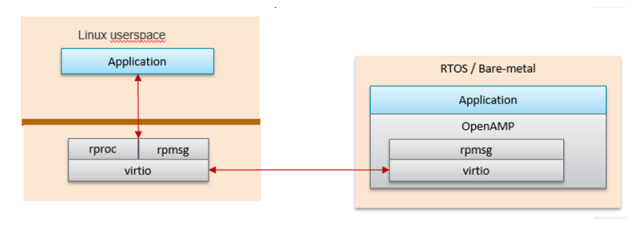

OpenAMP on Kria SOM¶
Starting from 22.1, OpenAMP is integrated to the Kria SOM pre-built images. OpenAMP is an open-source standard infrastructure for applications to make use of heterogeneous co-processors, and in Kria allows the APU to offload tasks to the MPSoC dual-core RPUs.
The Kria Starter Kit OpenAMP PetaLinux implementation uses the Linux kernel implementation of rpmsg for leveraging the MPSoC RPUs as co-processors. The out-of-box Kria Linux OpenAMP only implements a Linux based master on APU with the RPU as a client processor with corresponding pre-built RPU examples.
RPMsg Implementation¶
The OpenAMP community supports two models for RPMsg in a Linux master environment:
Linux kernel and RPU remote CPU
RPMsg using kernel integrated rpmsg and virtio implementations. The Kria implementation does not make use of the libmetal or openamp libraries in the Linux domain.
Linux kernel space provides rpmsg and remoteproc, but the RPU application requires Linux to load it in order to talk to the RPMsg counterpart in the Linux kernel.
Linux userspace OpenAMP application and RPU remote CPU
Linux rpmsg is implemented using the libmetal library with a Userspace implementation of virtio
OpenAMP library can also be used in Linux userspace. In this configuration, the remote processor can run independently to the Linux host processor.
The Kria Starter Kit Linux OpenAMP solution uses Linux kernel implementation (item #1). Details are shown in the block diagram from UG1186 below.

OpenAMP Device Tree¶
The Kria Starter Kit Linux includes the following device tree place-holders for OpenAMP co-processing applications.
remoteproc node
rpmsg shared memory
The Kria 2022.1 PetaLinux BSP and pre-built images (.wic) include the necessary device tree nodes and memory reservations. These can be found in the system.dtb of the 22.1 release BSP “prebuilt” folder.
OpenAMP Demos¶
The 2022.1 based Kria Starter Kit Linux contains the existing OpenAMP community demos summarized below. These demos are included in PetaLinux 22.1 wic image. They are also included in 22.1 BSPs.
openamp-echo-test - Linux to RPU bare metal communication echo test using rpsmsg
openamp-matrix-mul - Linux produces two matrices and sends them to the RPU for multiplication.
openamp-rpc-demo - Shows proxy behavior of the RPU as a co-processor to the APU
Details about each example applications can be found in UG1186
To run the OpenAMP applications reference below commands. Note that the “echo start” and “end stop” commands are required for each execution of the example application.
Echo Test application:
sudo -s # This is required so that the ELF loading can occur.
echo image_echo_test > /sys/class/remoteproc/remoteproc0/firmware # Specify Echo Test Firmware to be loaded.
echo start > /sys/class/remoteproc/remoteproc0/state # Load and start target Firmare onto remote processor.
echo_test # Run echo test linux application.
echo stop > /sys/class/remoteproc/remoteproc0/state # Stop target firmware.
Output of Echo Test should look like this:
**************************************
Echo Test Round 0
**************************************
sending payload number 0 of size 17
echo test: sent : 17
received payload number 0 of size 17
sending payload number 1 of size 18
echo test: sent : 18
received payload number 1 of size 18
.
.
.
sending payload number 470 of size 487
echo test: sent : 487
received payload number 470 of size 487
sending payload number 471 of size 488
echo test: sent : 488
received payload number 471 of size 488
******************18 L6 rpmsg_endpoint_cb():36 shutdown message is received.
19 L7 app():82 done
20 L6 main():129 Stopping application...
21 L7 unregistered generic bus
********************
Echo Test Round 0 Test Results: Error count = 0
**************************************
xilinx-kv260-starterkit-20221:/home/petalinux#
Matrix Multiplication:
sudo -s # This is required so that the ELF loading can occur.
echo image_matrix_multiply > /sys/class/remoteproc/remoteproc0/firmware # Specify Matrix multiplication to get Firmare onto remote processor.
echo start > /sys/class/remoteproc/remoteproc0/state # Load and start target Firmare onto remote processor.
mat_mul_demo # Run Matrix multiplication test linux application.
echo stop > /sys/class/remoteproc/remoteproc0/state # Stop target firmware.
Proxy RPC application:
Output of Maxtrix Multiplication should look like this:
``` text
Master : Linux : Input matrix 0
8 7 8 6 7 9
7 5 1 5 2 8
7 5 9 9 9 0
9 0 6 5 2 2
1 2 1 2 8 7
8 7 6 6 5 3
Master : Linux : Input matrix 1
7 2 0 0 0 4
8 7 1 9 8 0
1 7 3 7 4 5
0 6 7 1 8 6
0 8 5 8 6 0
3 5 4 3 6 4
0: write rpmsg: 296 bytes
read results
Master : Linux : Printing results
147 258 144 208 232 144
114 142 85 97 144 95
98 238 140 189 202 127
75 116 71 69 88 104
45 134 87 112 126 49
127 198 104 160 176 110
End of Matrix multiplication demo Round 0
Quitting application ..
Matrix multiply application end
```
Proxy Application
sudo -s # This is required so that the ELF loading can occur.
echo image_rpc_demo > /sys/class/remoteproc/remoteproc0/firmware # Specify proxy application to get Firmare onto remote processor.
echo start > /sys/class/remoteproc/remoteproc0/state # Load and start target Firmare onto remote processor.
proxy_app # Run proxy application.
echo stop > /sys/class/remoteproc/remoteproc0/state # Stop target firmware
Expected output of Proxy Application:
Master>RPC service started !!
Remote>Baremetal Remote Procedure Call (RPC) Demonstration
Remote>***************************************************
Remote>Rpmsg based retargetting to proxy initialized..
Remote>FileIO demo ..
Remote>Creating a file on master and writing to it..
Remote>Opened file 'remote.file' with fd = 6
Remote>Wrote to fd = 6, size = 45, content = This is a test string being written to file..
Remote>Closed fd = 6
Remote>Reading a file on master and displaying its contents..
Remote>Opened file 'remote.file' with fd = 6
handle_read: 4, 225
Remote>Read from fd = 6, size = 225, printing contents below .. This is a test string being written to file..This is a test string being written to file..This is a test string being written to file..This is a test string being written to file..This is a test string being written to file..
Remote>Closed fd = 6
Remote>Remote firmware using scanf and printf ..
Remote>Scanning user input from master..
Remote>Enter name
Jue
handle_read: 4, 4
Remote>Enter age
29
handle_read: 4, 3
Remote>Enter value for pi
3.14
handle_read: 4, 5
Remote>User name = 'Jue'
Remote>User age = '29'
Remote>User entered value of pi = '3.140000'
Remote>Repeat demo ? (enter yes or no)
no
handle_read: 4, 3
Remote>RPC retargetting quitting ...
Remote> Firmware's rpmsg-rpc-channel going down!
License¶
Licensed under the Apache License, Version 2.0 (the “License”); you may not use this file except in compliance with the License.
You may obtain a copy of the License at http://www.apache.org/licenses/LICENSE-2.0
Unless required by applicable law or agreed to in writing, software distributed under the License is distributed on an “AS IS” BASIS, WITHOUT WARRANTIES OR CONDITIONS OF ANY KIND, either express or implied. See the License for the specific language governing permissions and limitations under the License.
Copyright© 2021 Xilinx